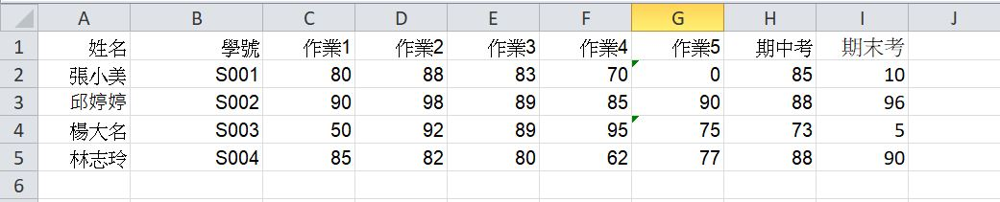
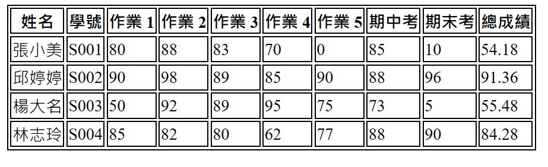
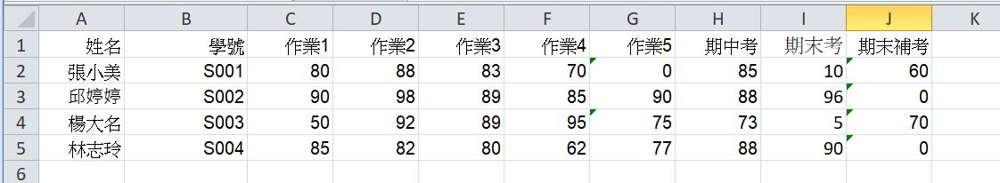
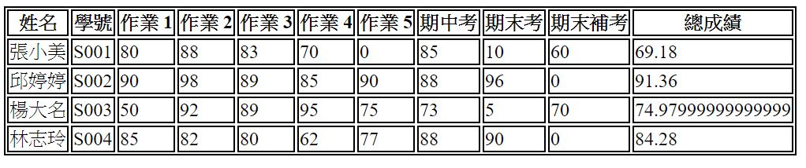

成績計算作業: 將成績資料套到 HTML table 當中
套表呈現應用需求非常多，如成績單、商品訂單、醫護量表等
常見的處理流程
- 將 Excel 資料轉換成套表程式易於處理的格式，如 JS array,JSON, XML 等格式(資料轉換也須寫程式,以後會教)。
- 套表程式引入標準格式資料 (可暫用 JS arryy的模式, 未來程式將直接從伺服器下載資料)。
- 使用迴圈將資料套到 HTML table, 迴圈內包含成績計算公式及判斷邏輯(如判斷是否及格,或將百分比成績轉換成等第成績)
作業要求
某課程同學的成績如下表:

初步成績統計結果:

上列成績計算方式: 5次作業佔 40%, 期中考 30%, 期末考 30 %
產生統計結果的網頁程式，程式中包含JS 二維陣列(Grade.js)成績資料
由於有多位同學成績不及格，所以好心的老師讓不及格的同學補考期末考
合併期末補考的成績如下表:

其轉換後之JS 陣列(Grade2.js)成績資料
因此,我們需要修改上述產生統計結果的網頁程式,以產生新的統計結果,如下.
最後成績統計結果:

請大家修改原來成績計算程式範例,產生如上之最後成績統計結果.
註: 成績計算方式不變(5次作業佔 40%, 期中考 30%, 期末佔 30 %), 但期末補考與期末考採計較高的分數.
作業繳交方式
若使用 zip 壓縮上傳修改之程式，繳交前，記得 grede2.js 檔需與設計之網頁一起壓縮上傳.
也可挑戰將修改之網頁程式及 grede2.js 檔發佈到網站, 如 github 網站.
這樣就僅需在學習平台作業繳交區, 貼上成果網址連結即可.